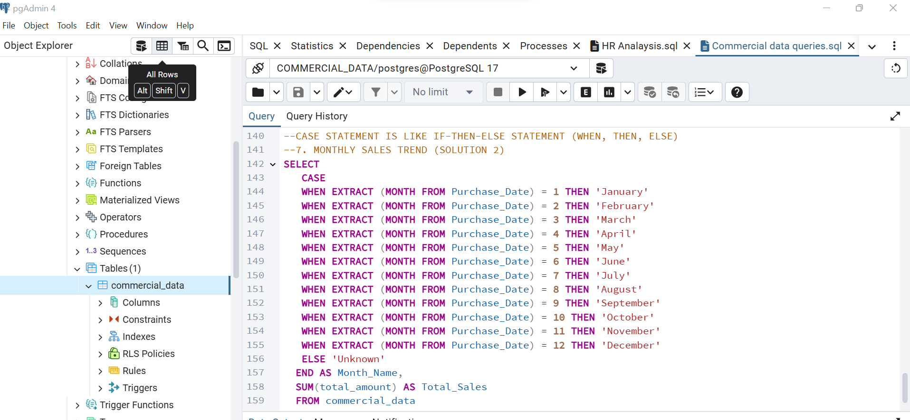
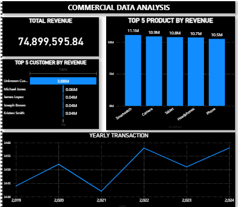
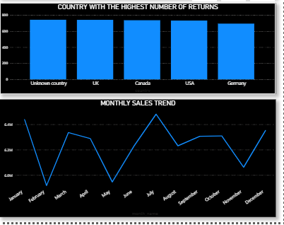
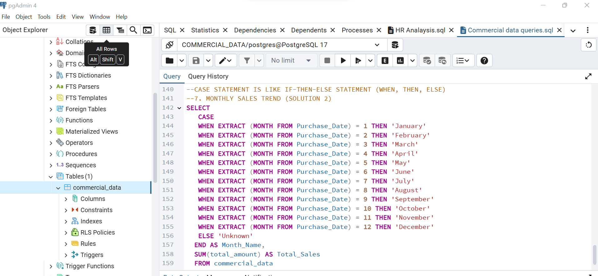
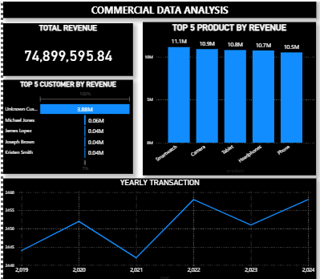
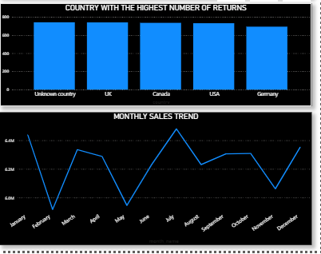

Commercial Data Cleaning Project – Cleaning and Analysis
 





Tools Used: PostgreSQL, pgAdmin 4, SQL Data Cleaning, Aggregate Functions, CASE Statements, Data Validation Queries
Problem Solved: The commercial dataset was filled with missing, null, and inconsistent values across key columns, leading to inaccurate reports and unreliable insights.
Solution Provided: I wrote SQL queries to identify and clean missing data, replace nulls with placeholders, validate quantities and prices, and calculate verified revenue. Analytical queries followed to extract total revenue, top customers/products, monthly trends, and return patterns.
Outcome: Cleaned data enabled consistent and accurate analysis. The insights revealed seasonal patterns, top-selling items, and regions with high return rates, allowing the commercial team to adjust promotions, improve fulfillment accuracy, and enhance customer targeting.